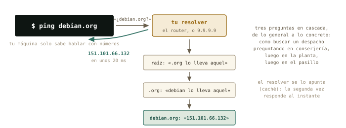
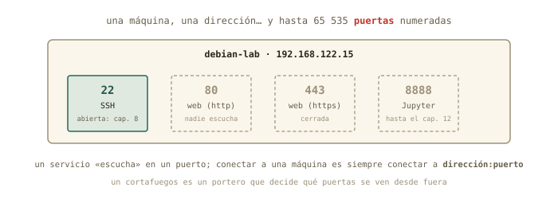

10 Nombres y caminos
Ayer hablaste con la red por números. Hoy descubres todo lo que pasa en el segundo que transcurre entre escribir debian.org y ver la página: la guía telefónica de internet, el camino que recorren tus paquetes salto a salto hasta la universidad, y por qué una máquina tiene una dirección pero miles de puertas. Y por primera vez tocas el router — con cambios reversibles, cada uno con su vuelta atrás escrita antes de tocar nada.
Al terminar esta sesión sabrás
- Qué es el DNS, quién responde cuando preguntas por un nombre, y cómo ver la respuesta con
host. - El fichero
/etc/hosts: la guía telefónica más antigua, y cómo usarla para bautizar a tu máquina virtual. - Seguir el camino de tus paquetes hasta la universidad con
tracepath, salto a salto. - Qué es un puerto, por qué SSH es el 22 y la web el 443, y cómo ver qué puertas tiene abiertas una máquina.
- TCP frente a UDP en diez minutos, y qué es un cortafuegos.
- Por qué el cable gana a la Wi-Fi para un servidor — y medirlo.
- El protocolo de cambio reversible: anotar, escribir la vuelta atrás, cambiar, verificar.
10.1 Qué pasa al escribir un nombre: DNS
Tu máquina solo sabe hablar con números; tú solo recuerdas nombres. Entre ambos está el DNS (Domain Name System): un servicio distribuido por todo el planeta que traduce debian.org en 151.101.66.132. Lo usas cada vez que escribes un nombre, y ping te lo enseña sin pedírselo:
marcos@portatil:~$ ping -c 1 debian.org
PING debian.org (151.101.66.132) 56(84) bytes of data.
64 bytes from 151.101.66.132: icmp_seq=1 ttl=57 time=18.2 ms
marcos@portatil:~$ host debian.org
debian.org has address 151.101.66.132
marcos@portatil:~$ resolvectl status | grep "DNS Servers"
DNS Servers: 192.168.1.1host hace la pregunta a secas y te da la respuesta. Y resolvectl status te dice a quién se la hace tu máquina: a 192.168.1.1 — el router, que a su vez pregunta a los servidores de tu compañía. Es uno de los datos que el DHCP del capítulo 9 te prestó junto con la dirección.

¿Y antes del DNS? Un fichero de texto — en Linux siempre hay un fichero de texto — que sigue existiendo y que tu máquina consulta antes que a cualquier servidor: /etc/hosts.
marcos@portatil:~$ cat /etc/hosts
127.0.0.1 localhost
127.0.1.1 portatilDos líneas: localhost eres tú, y portatil también. Lo interesante es lo que puedes añadir: una línea 192.168.122.15 debian-lab y, desde ese momento, ping debian-lab — y en el capítulo 11, ssh debian-lab — funciona sin números. Es la guía telefónica privada de tu máquina, y la práctica de hoy la estrena.
◷ Historia · Cuando internet cabía en un folio
En los años 70, la «guía» de ARPANET era literalmente un fichero, HOSTS.TXT, que una oficina de Stanford mantenía a mano y que cada máquina de la red descargaba periódicamente: nombre, dirección, y ya. Funcionó mientras internet tenía docenas de máquinas; en 1983, con cientos y creciendo, Paul Mockapetris diseñó el DNS — un sistema distribuido en el que nadie tiene la lista entera y cada uno responde por su parcela. Tu /etc/hosts es el descendiente directo de aquel fichero: la guía de bolsillo que sobrevivió a la guía telefónica.

10.2 El camino: tracepath
ping te decía cuánto tardaba un paquete; tracepath te enseña por dónde pasa. Cada router del camino es un salto, y la herramienta los va descubriendo uno a uno:
marcos@portatil:~$ tracepath -n uma.es
1?: [LOCALHOST] pmtu 1500
1: 192.168.1.1 2.104ms
2: 10.40.128.1 9.870ms
3: 81.46.12.201 12.335ms
...
9: 150.214.40.10 21.482ms reachedEl primer salto es siempre tu router; el segundo ya está en la compañía (fíjate: una dirección 10.x — privada, capítulo 9 — que la operadora usa por dentro); y unos saltos después, la universidad. El tiempo crece con cada salto, y el mínimo lo pone la física de ayer. Cuando «no va internet», tracepath te dice hasta dónde llega: si se corta en el salto 1, el problema es tuyo; si en el 2 o el 3, de la compañía. (traceroute, su hermano clásico, hace lo mismo con más opciones — apt install traceroute si lo echas de menos.)
10.3 Una dirección, muchas puertas: los puertos
Una máquina tiene una dirección, pero ofrece muchos servicios a la vez. Cada uno escucha en un puerto: un número del 1 al 65 535 que acompaña a la dirección. Conectarse a una máquina es siempre conectarse a dirección:puerto, y los puertos de los servicios clásicos están acordados desde hace décadas:
| Puerto | Servicio | Dónde lo verás |
|---|---|---|
| 22 | SSH | el capítulo 11 entero |
| 53 | DNS | cada nombre que resuelves |
| 80 / 443 | web sin cifrar / cifrada (https) | cada página que abres |
| 8888 | Jupyter | el caso estrella del capítulo 12 |

Y puedes mirar las puertas. Desde dentro, ss (socket statistics) lista lo que escucha; desde fuera, el nmap que instalaste ayer toca a la puerta de cada una:
marcos@debian-lab:~$ ss -tln
State Recv-Q Send-Q Local Address:Port Peer Address:Port
LISTEN 0 128 0.0.0.0:22 0.0.0.0:*marcos@portatil:~$ nmap 192.168.122.15
PORT STATE SERVICE
22/tcp open sshTu servidor, visto desde dentro y desde fuera, cuenta lo mismo: una puerta abierta, la 22, y detrás el servidor SSH que marcaste en el instalador. Mañana entrarás por ella.
◉ Por dentro · TCP y UDP en diez minutos
Los paquetes viajan de dos maneras. TCP es correo certificado: antes de enviar se establece una conexión, cada paquete se confirma, los perdidos se reenvían y todo llega en orden — más lento, pero fiable. SSH, la web y el correo van así. UDP es una postal: se envía y ya, sin conexión ni confirmación — rapidísimo, y si una se pierde, se pierde. Las consultas DNS, el vídeo en directo y los juegos van así: prefieren perder un paquete a esperar. Por eso nmap decía 22/tcp: el puerto 22 de TCP. Los dos sistemas conviven en la misma dirección con números independientes.
✚ Truco · El cortafuegos, en una frase
Un cortafuegos (firewall) es un portero que decide qué puertas se ven desde fuera. Tu router lo es sin que lo sepas: gracias al NAT del capítulo 9, ninguna puerta de tu casa es visible desde internet salvo que la abras a propósito. En Linux, ufw hace ese papel en una máquina concreta (sudo ufw status te dirá que en tu Mint está inactivo — no hace falta activarlo hoy). En el servidor de la universidad, en cambio, el portero existirá y será estricto: si un día «no puedes conectar», la pregunta es siempre «¿qué puerta hay abierta y quién la vigila?».
10.4 Cable o Wi-Fi
Un dato práctico que separa el portátil del servidor: por Wi-Fi, los paquetes comparten el aire con los vecinos, se pierden y tardan más de forma irregular; por cable, no. Y como todo aquí, se mide. Tu tarjeta Wi-Fi te dice cuánta señal recibe — en dBm, una unidad que reconoces:
marcos@portatil:~$ iw dev wlp3s0 link | grep signal
signal: -58 dBm
marcos@portatil:~$ ping -c 20 192.168.1.1 | tail -2
20 packets transmitted, 19 received, 5% packet loss, time 19031ms
rtt min/avg/max/mdev = 1.9/6.4/48.2/11.7 msUn −58 dBm es buena señal (−30 sería pegado al router; −80, cobertura mala). Y fíjate en la línea de ping: un paquete perdido de veinte, y un tiempo que oscila entre 2 y 48 ms — ese mdev es la desviación típica, y por Wi-Fi es grande. Por cable serían 20 de 20, 1 ms, y mdev de décimas. Moraleja para el futuro: un servidor va por cable; y si tu debian-lab un día vive en un PC físico, ese PC tendrá un cable.
10.5 El protocolo del cambio reversible
Hoy tocas el router por primera vez, y lo haces con un método que vale para cualquier sistema que no tenga instantáneas — es decir, para casi todo en la vida real:
- Anota el valor actual — captura de pantalla o línea en el cuaderno. Sin esto, no hay vuelta atrás posible.
- Escribe la vuelta atrás antes de tocar: «para deshacer, ir a X y poner Y».
- Cambia una sola cosa.
- Verifica con un comando que el cambio hizo lo que esperabas.
- Decide: se queda, o se ejecuta la vuelta atrás.
Los cambios de hoy son dos, elegidos por útiles y reversibles: una reserva de dirección — pedirle al DHCP del router que a tu portátil le dé siempre la misma IP, identificándolo por su MAC — y el servidor DNS que el router reparte a la casa. Y uno previo, si procede: si la contraseña de administración del router sigue siendo la de la pegatina, cámbiala — apuntando la nueva en un sitio seguro antes de pulsar guardar. Lo que no se toca hoy: la Wi-Fi, el rango del DHCP, y nada que diga «restablecer».
△ Cuidado · Los dos cambios que dejan a la casa sin internet
Cambiar la dirección del propio router (192.168.1.1) o desactivar su DHCP son cambios legales pero que cortan la red a todos los aparatos hasta que se arregla — y arreglarlo exige saber más de lo que sabes hoy. Ni siquiera con vuelta atrás escrita: no en el piloto. El curso los deja para quien administre un router en serio, con un segundo equipo por cable para rescatarlo.
10.6 Práctica: la guía y las puertas
Cuaderno en marcha (script sesion10.log). Los cambios de hoy se hacen con el protocolo: valor actual, vuelta atrás escrita, cambio, verificación.
Nivel 1 · Lo esencial
Ejercicio 10.1 · El DNS en acción
Con host, averigua la dirección de uma.es, de debian.org y de google.com (esta última te dará varias: anota cuántas). Averigua también a qué servidor le pregunta tu máquina (resolvectl status). Pista: host nombre a secas; si host no existe, sudo apt install bind9-host.
host uma.es, host debian.org, host google.com — Google devuelve varias direcciones (y una de tipo IPv6, más larga: es la nueva numeración de internet, que hoy dejamos de lado). El resolver será tu router, 192.168.1.1, salvo que tu compañía configure otro.
Por qué así — Ver que un nombre tiene varias direcciones desmonta la idea de «la dirección de Google»: son granjas de servidores, y el DNS reparte. Y saber a quién preguntas es el primer paso para cambiarlo con criterio en el 10.5.
Ejercicio 10.2 · Bautizar a la VM
Añade a /etc/hosts de tu Mint una línea con la IP de debian-lab (la de ip a dentro de la VM) y su nombre, y comprueba que ping debian-lab funciona. Antes de editar, aplica el protocolo: copia de seguridad del fichero y vuelta atrás escrita. Pista: sudo cp /etc/hosts /etc/hosts.bak, sudo nano /etc/hosts, y una línea como 192.168.122.15 debian-lab al final. Vuelta atrás: sudo cp /etc/hosts.bak /etc/hosts.
Tras guardar, ping -c 1 debian-lab responde desde 192.168.122.15 sin haber preguntado a ningún DNS: /etc/hosts se consulta primero. Si la IP de la VM cambiara algún día (el DHCP de libvirt suele mantenerla, pero no lo jura), basta actualizar la línea.
Por qué así — Es tu primera edición de un fichero de /etc con sudo — capítulo 4 — hecha con red: copia antes, vuelta atrás escrita. Y el premio llega mañana: ssh debian-lab en vez de una ristra de números.
Ejercicio 10.3 · El camino a la universidad
Ejecuta tracepath -n uma.es (o el dominio de tu universidad). ¿Cuántos saltos hay? ¿Cuál es el primero? ¿En qué salto aparece la primera dirección que no es privada — es decir, dónde sale tu paquete a internet? Pista: privadas son 10.x, 192.168.x y 172.16–31.x; repasa la figura del NAT del capítulo 9.
Entre 8 y 15 saltos es lo normal. El primero es 192.168.1.1, tu router; a menudo el segundo o tercero sigue siendo privado (la red interna de la compañía), y la primera pública marca la salida real a internet. Algún salto puede aparecer como no reply: routers que no contestan por política — no es un fallo.
Por qué así — Tu paquete acaba de contarte su viaje. La próxima vez que «no vaya internet», este comando te dirá en qué salto muere — y por tanto a quién llamar.
Ejercicio 10.4 · Las puertas de tu servidor
Desde dentro de debian-lab, lista los puertos que escuchan (ss -tln); desde tu Mint, tócalos desde fuera (nmap debian-lab — ya tiene nombre). ¿Coinciden las dos vistas? Pista: -t TCP, -l solo los que escuchan, -n números en vez de nombres.
Dentro: LISTEN en 0.0.0.0:22 (y quizá [::]:22, su versión IPv6). Fuera: 22/tcp open ssh. Una puerta, dos puntos de vista, el mismo resultado — y nmap funcionando ya por nombre gracias al 10.2.
Por qué así — Comparar la vista interior con la exterior es el diagnóstico básico de cualquier servicio: si dentro escucha pero fuera no se ve, hay un portero en medio (cortafuegos o NAT). Hoy no lo hay; en la universidad lo habrá.
Nivel 2 · El mecanismo
Ejercicio 10.5 · Dos cambios en el router, con vuelta atrás
Con el protocolo completo (valor actual anotado, vuelta atrás escrita, cambio, verificación): (a) crea una reserva DHCP para tu portátil, de modo que siempre reciba la misma dirección — la que tiene ahora vale —; (b) cambia el servidor DNS que el router reparte por 9.9.9.9 (Quad9) o 1.1.1.1 (Cloudflare). Verifica (a) reconectando la Wi-Fi y mirando ip a, y (b) con resolvectl status tras reconectar. Pista: los menús se llaman «Reserva de dirección», «DHCP estático» o «Asignación fija» en la sección LAN/DHCP; el DNS suele estar en LAN/DHCP o en WAN/Internet. Si no encuentras uno de los dos, deja constancia y sigue: no todos los routers lo exponen.
- La reserva asocia tu MAC (capítulo 9) a una IP; tras reconectar,
ip ala muestra, y ahora tu/etc/hostso el SSH de mañana pueden contar con ella. (b)resolvectl statuspasa de192.168.1.1a9.9.9.9;host debian.orgsigue resolviendo. Vuelta atrás de cada uno: borrar la reserva; devolver el DNS al valor anotado (a menudo «automático»).
Por qué así — Dos cambios pequeños, útiles y deshechos en un minuto si molestan: exactamente el tipo de administración que se hace en una casa. Y el protocolo que has seguido es el mismo con el que tocarás un servidor de verdad — donde tampoco habrá instantáneas.
Nivel 3 · El reto (opcional)
Ejercicio 10.6 · Wi-Fi contra cable, con datos
Si tienes un cable de red a mano: mide con ping -c 30 al router por Wi-Fi y por cable, y compara media, máximo, mdev y paquetes perdidos. Añade la señal Wi-Fi en dBm (iw dev … link). Escribe en el cuaderno una conclusión de dos líneas, como en un informe de prácticas. Pista: ip a te dirá qué interfaz está activa en cada caso (wlp… o enp…); desactiva la Wi-Fi mientras mides por cable para no mezclar.
Cable: 30 de 30, ~1 ms, mdev de décimas. Wi-Fi: alguna pérdida posible, media mayor y mdev de varios ms — más cuanto peor la señal (por debajo de −70 dBm empieza a notarse). Conclusión típica: «la media apenas cambia; la dispersión y las pérdidas sí — por eso el servidor va por cable».
Por qué así — Media, desviación y pérdidas: el mismo trío que resume cualquier medida de laboratorio. Has convertido una opinión de foro («el cable va mejor») en un resultado con incertidumbre.
10.7 Autocomprobación
Marca una respuesta por pregunta; la corrección es inmediata.
El DNS sirve para…
Añades 192.168.122.15 debian-lab a /etc/hosts. Al hacer ping debian-lab…
/etc/hosts se consulta antes que el DNS: es la guía privada de tu máquina.En tracepath, el primer salto es siempre…
Un puerto es…
ss o nmap te enseñan cuáles están abiertos.SSH va sobre TCP y no sobre UDP porque…
El primer paso del protocolo de cambio reversible es…
Autocomprobación (test de la sección 10.8) — Respuestas: 1 a · 2 b · 3 b · 4 b · 5 a · 6 b.
La próxima sesión
Bloque E: trabajar en remoto. Tienes un servidor con nombre (debian-lab), una puerta abierta (la 22) y, desde hoy, el mapa entero de cómo llegar a ella. En el capítulo 11 entras: SSH, claves en vez de contraseñas, y copiar ficheros entre máquinas con scp y rsync — primero contigo mismo, luego con tu VM, y después con cualquier servidor del mundo. Guarda sesion10.log: bloque D completo.
cap. 10 v0.1 · piloto — anota tiempo real invertido, dudas y erratas junto a tu sesion10.log